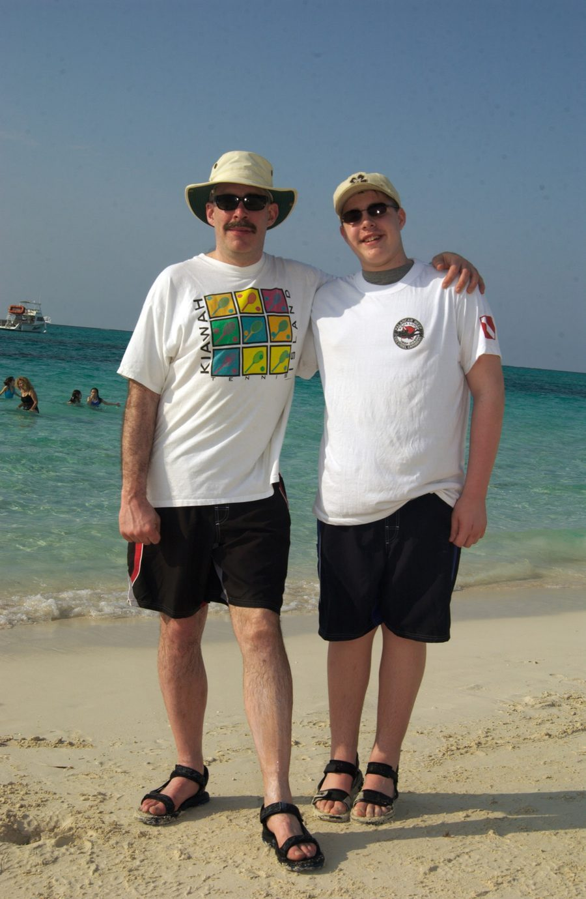

Grace Bay · Providenciales, Turks & Caicos Islands
Caribbean · Turks & Caicos
Some places exist at the edge of the world's imagination — places where the water is so absurdly blue that photographs of it look retouched, and where the sand is so fine and white it seems almost invented. Grace Bay, on the island of Providenciales, is one of those places.
This photograph was taken with Timothy James O'Brien Jr. on the white sand of Grace Bay Beach — consistently ranked among the finest beaches on the planet. Behind them, the Caribbean Sea stretches toward the horizon in gradations of turquoise and cobalt that belong more to a painter's palette than to the real world.
It is a photograph of a place, certainly. But it is more a photograph of a moment — the kind that fathers and sons collect without fully knowing they are doing so, and only understand later.
Context & Chronicle
Long before Europeans arrived, the islands were inhabited by the Lucayan Taíno — a seafaring Arawakan people who paddled across the Caribbean in dugout canoes, fished the shallow banks, and left behind shell middens and petroglyphs that archaeologists are still interpreting today. Columbus's arrival in 1492 ended their world within decades.
For most of their colonial history, the Turks & Caicos were valued for one thing: salt. The shallow, sun-baked salinas of Grand Turk and Salt Cay produced raking salt that preserved fish from Bermuda to New England. Bermudian rakers worked the pans seasonally, living in conditions of considerable hardship to supply a trade that underpinned the Atlantic economy.
Few small island groups have changed hands as many times as the Turks & Caicos. Claimed variously by Spain, France, and Britain, administered at different times from Bermuda, the Bahamas, and Jamaica, the islands were finally constituted as a separate Crown Colony in 1973. They remain a British Overseas Territory today — one of fourteen — with a governor appointed by the Crown and a locally elected parliament.
The Turks & Caicos sit atop the Caicos Bank — one of the largest coral reef systems in the world — and the sea has always defined the islands' character. The queen conch (Strombus gigas) was once so abundant that shells were used as building material; today the fishery is strictly managed. Humpback whales pass through the Columbus Passage each spring, migrating north from their breeding grounds near the Dominican Republic.
As recently as the 1980s, Providenciales was sparsely populated scrubland. The opening of Club Med in 1984 triggered a transformation that turned a remote limestone island into one of the Caribbean's most coveted destinations. Grace Bay — a twelve-kilometre arc of powder-white sand facing a barrier reef — was named the world's best beach by TripAdvisor for multiple consecutive years, a designation that proved both blessing and challenge for an island still finding its footing.
The colour of Grace Bay's water is not an accident of light or photography. The shallow bank causes sunlight to refract through pure calcium carbonate sand and reflect back through exceptionally clear, sediment-free water — producing the improbable spectrum of turquoise, teal, and cobalt that defines the place. Visibility underwater can exceed thirty metres. It is, in the truest sense, a window into another world.
"The best beaches are not measured in sand or water alone — they are measured in what they give back to you when you stand there long enough to stop thinking."
Grace Bay has a quality that is difficult to name and easy to feel. It is not merely the beauty — though the beauty is extraordinary — but something in the proportion of things: the shallow warm water you can walk out into for fifty metres without losing your footing, the reef close enough to snorkel from shore, the sky that seems to begin directly above your head and extend without interruption to the edge of everything.
The Turks & Caicos sit at the confluence of the Atlantic Ocean and the Caribbean Sea, in a passage that Columbus himself may have navigated. The islands are low and scrubby on their windward sides — limestone karst worn smooth by centuries of trade wind — and improbably radiant on their leeward shores, where the protected water settles into stillness and takes on that quality of light that makes grown adults stop mid-sentence and simply stare.
A father and son standing on that beach, arms around each other, squinting into the sun — this is not a remarkable photograph in any technical sense. The light is flat, the composition ordinary, the subjects unaware of the camera. But it is the kind of image that accumulates meaning over years, the kind that surfaces unexpectedly and carries with it the smell of salt air, the warmth of equatorial sun, and the specific, irretrievable pleasure of being somewhere together when both of you were exactly the age you were.
The water behind them will look exactly the same a hundred years from now. The boys standing in front of it will not. That is, perhaps, the whole point.